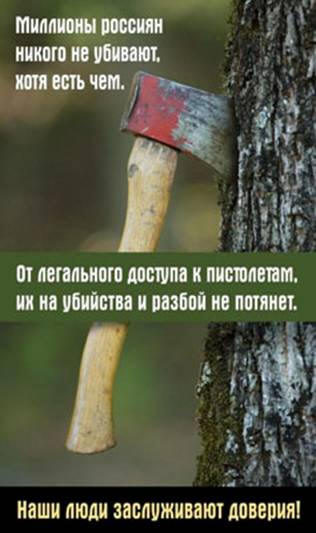
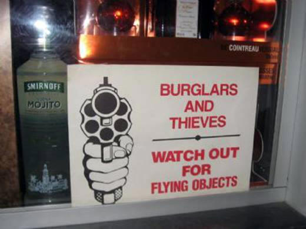
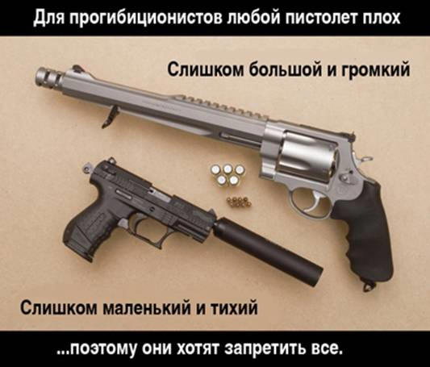

На арене цирка Оперуполномоченный Гоблин
|
Не люблю я хамов. Зачем мне конкуренты? |
Тупичковых гоблинов мы обозрели в самом начале, теперь посмотрим внимательно на самого хозяина Тупичка, а именно — на его текст «Касательно свободной продажи оружия».
Итак, займемся психопаталогоанатомией.
«Регулярно задают вопросы: а как ты относишься к свободной продаже оружия? Отвечаю: равнодушен. То есть никаких эмоций по данному поводу не испытываю. По мне так пусть хоть сегодня начинают продавать — я себе немедленно приобрету пару-тройку стволов. Стрелять люблю и даже, не побоюсь такого слова, умею.»
В первом же абзаце фиксируем вранье. Мол, отношусь равнодушно, но стрелять люблю и пару-тройку стволов куплю, если будет возможность. Как это состыкуется, а?
И не надо формально разводить вопросы — мол, О.Гоблин писал про свободную продажу оружия, к чему эмоций интенсивно не испытывает, а что он стрелять любит — это совсем другой вопрос. Все просто: если имярек любит стрелять, то он хочет стрелять, для чего он должен иметь оружие, как не трудно догадаться. Конечно, возможен вариант «а у меня и так есть, а вам на фиг не надо, вы — это не я» (что тоже симптоматично), но тут заявлено, что «купил бы».
sternenzaehler: Манипуляций тут нет, просто утверждение прикольное. Оно лживое на все 100%. Достаточно прочитать комментарии. Гоблин рвет и мечет, причем не понять чего больше, метания или рвания. Любой желающий может посмотреть эмоциональный накал. «Не испытываю», ага. Стопудофф.
«Наличие пистолета лично в моей жизни мало что поменяет. Поменяет ли что-нибудь в жизни общества? Полагаю, в некоторых аспектах — да. Однако преступность это не ликвидирует, а на стартовом этапе будут жертвы.»
Обсуждать личную жить Гоблина — поменяется в ней что-либо или нет, смысла не имеет. В обществе — в некоторых аспектах поменяется, таки да. Преступность не ликвидируется, на стартовом этапе будут жертвы.
Казалось бы, все верно. НО!
Смотрим унутрь. В суть — что и зачем.
1. Суггестия: мне, великому Оперуполномоченному Гоблину, какие-то там надмозги будут что-то говорить. МНЕ это по фиг, следовательно — всем должно быть пофиг.
2. Некоторые аспекты поменяются, но упоминать их не надо. Оно малозначимы и пофиг.
3а. Преступность это не ликвидирует — так о чем еще говорить? Суггестия: единственное, для чего стоит легализовать короткоствол, это для ликвидации преступности (даже не снижения уровня!!!). Ну а раз не получится — то и не надо легализировать.
3б. На стартовом этапе будут жертвы. Будут. Но они и так есть, знаете ли. Вопрос в том, будут ли «лишние» жертвы — и среди кого. Преступники — не идиоты, чтобы пользоваться зарегистрированным оружием. А вот у граждан сейчас с собой нет никакого. С другой стороны — ружей много, и как-то они не особо используются в бытовых разборках. Более того — смертность от ножа больше, чем от пистолета в случае бытового конфликта. Не говоря уж о дробовике 12-го калибра. Кучи жертв от травматика и пневматики тоже как-то не видно... Писал уже как-то:
«Все замерли в ожидании легалайза — именно этим объясняется то, что русские не перестреляли друг друга из табельного оружия силовых структур и охранных агентств. Несколько миллионов единиц охотничьего оружия презрительно пылится в сейфах — нет, это не наш метод!
Наш метод — исключительно стрельба из пистолета или, на худой конец, револьвера. Причем не абы какого, а именно официально разрешенного как оружие самообороны и обязательно боевого. Это кавказцы могут использовать травматик — скажем, весной 2007 года в кафе “Пироги” был убит выстрелом в горло 24-хлетний Евгений Кузнецов. Травматиков у русских на руках много, но они фанатично ждут разрешения носить оружие именно с порохом, пулями и короткоствольное.
Про газовые пистолеты и тем более пневматику и говорить нечего. Загадочные флюиды воздействуют исключительно на территории РФ и влияют только на мозги носителей легального оружия, причем не служебного, а личного, самооборонного.
И это легко доказать: если бы не было такого редкого природного явления, то разве не был бы разрешен этот самый короткоствол?
Хвала правительству, которое хранит нас от неминуемой беды!»
«Многие по причине полной незамутненности уверенно полагают, что наличие пистолета — гарантия личной безопасности. Осмелюсь доложить, думать так может только полный идиот.»
Не спорю. Вполне себе верный тезис.
Вот только суггестия какая? А вот такая: «кто за наличие пистолета, тот — идиот».
При этом я не встречал ни одного сторонника легализации, который заявлял бы, что наличие КС дает гарантию личной безопасности. Речь идет об, упрощенно говоря, «увеличении степени безопасности», а не о гарантиях.
sternenzaehler: Классическая манипуляция (то есть прямо из учебника). Приписываем сторонникам КС нелепое утверждение и тут же разбиваем его в пух и прах. Это признанный факт, ТАК думать может действительно только идиот. Гарантию того, что тебя не убьют, может дать только одна вещь. Суицид. После этого уже точно никто не убьет. КС никаких гарантий не дает, и вменяемые данную формулировку «гарантия безопасности» никогда не используют.
Манипуляцию усиливает обобщение «многие». Кто многие? Многие сторонники КС? Кто их считал? Да никто. Это просто манипулятивный прием.
Итак разобрались. Факт есть. Такое мнение действительно есть, есть люди, которые его представляют. Они действительно не очень умные. Какое отношение эти люди имеют к идее легалайза, непонятно. Да, они о ней кричат. Так и в политике тоже — есть люди, которые на кухнях чего-то кричат, однако ж к теме политики не относятся.
Высказывание с помощью приемчика «многие» распространено на всех защитников КС. Почему именно на всех? Да потому, что слово «многие» действует на подсознательном уровне — а дальше по тексту разделения на умных сторонников КС и глупых не делается — поэтому действие распространяется на всех сторонников.
«Первое, оно же главное. Нормальный уголовник — это не Клинт Иствуд. Он не стоит под фанфары Морриконе посреди улицы, нервно подергивая пальцами над открытой кобурой. Нормальный уголовник заходит со спины — так, чтобы его не видели и не успели среагировать. И бьет жертву чем-нибудь тяжелым по башке. Попадание в реанимацию гарантировано примерно в 85% случаев. Те, кому особенно повезет, сразу заезжают в морг. Обстановка нервная, силу удара рассчитать трудно, поэтому бьют со всей дури. Обращаю внимание: отличный результат достигается при полном отсутствии огнестрельного оружия.»
А здесь все не просто, а очень просто (с).
Гоблин берет единственный вариант нападения и обобщает на все преступления. Что, преступники нападают только так?. Конкретно в этой ситуации (реализующейся именно таким образом) пистолет не поможет, но можно привести кучу ситуаций, когда очень даже. Начиная с «вернулись домой, квартира вскрыта, а домушники еще не смылись» или «девушка возвращается домой ночью, а навстречу — подозрительная гопота» и до «вашу любимую изнасиловали и убили, причем вы знаете, кто, а милиции — пофиг».
sternenzaehler: Продолжаем далее. Манипулятивный прием «вброс факта в контексте» (сорри, научное название точно не помню). То есть, контекст уже начат рассмотрением высказывания «многих незамутненных». Продолжение поэтому автоматически приписывается им же. То бишь, если сказать «нормальный уголовник — это не Клинт Иствуд» в данном контексте — в голове откладывается «ага — значит, те самые идиоты “многие” из первого абзаца утверждали, что уголовник это как раз Клинт Иствуд. Ясненько. Ща Гоблин их всех порвет.»
Таким образом, факт официально никому не приписывается, он висит в тексте «не пришей рукав». Но по факту отрицание этого утверждения приписывается оппонентам большинством читателей. В самом деле, зачем чего-то опровергать, если это не было сказано. Значит, было сказано. Зря ведь не будут опровергать?
На самом деле сторонника КС, утверждающего, что разборки с уголовниками превратятся в киношные перестрелки (хоть по типу Дикого Запада, хоть по типу модерновых боевиков), надо еще поискать днем с огнем. И при поисках не забывать, что маргиналы присутствуют среди сторонников любой идеи, кроме, пожалуй, идей общества по борьбе с маргиналами.
Что можно сказать по самому факту? Да, прав Гоблин, конечно же. Все верно описал. Но... см. выше.
Далее несколько похожих примеров усиливают эффект. В них крутые урки выносят гражданских пачками.
Кроме того — как всегда, что характерно, замалчивается вопрос содействия прохожих и т.д. Потерпевший, возможно, и не видит — а другие вполне могут заметить. Вот показательное от ЖЖ-юзера kontei:
«Я живу в стране, где гражданское огнестрельное оружие легально и распространено. Более того, многочисленные солдатики и солдатки, отправляясь в увольнение, не запирают свой автомат в оружейной комнате, как в России, а тащат его с собой (и уставные два магазина нередко тоже). Так что в час пик в любом автобусе обычно едут пять-десять пистолетов и револьверов и еще три-четыре автомата, иной раз и с подствольным гранатометом до кучи.
При этом (и, думается мне, именно поэтому) преступления с физическим насилием в Израиле весьма непопулярны. Оно, в общем, и понятно — прежде, чем набить кому-либо морду или отнять кошелек, гопнику необходимо обойти человека со всех сторон и убедиться, что у того не висит “Desert Eagle” на заднице, не торчит из кармана рукоять “Глока”, не оттопыривается под мышкой куртка... Да и у хрупкой девушки в косметичке может оказаться не только помада с пудреницей, но и ужасно смешной револьвер 0.25 с наклейками, изображающими мультяшных персонажей, на рукояти (сам видел такой артефакт) — и совершенно не смешными экспансивными пульками в барабане. И даже если ничего такого нет и в помине, “нарушать безобразия” на улице или в темной подворотне все равно чревато — могут заметить. Это в России случайный свидетель группового изнасилования или ограбления может разве что позвонить в милицию. А у нас случайный свидетель может молча передернуть затвор...»
Изучаем О.Гоблина дальше:
«Действуя группой, приближаются безобидной компанией. После чего один негодяй заходит сзади и хватает за руки, а парочка других начинает бить спереди. Если вас никогда не били по голове умелыми руками, сообщаю: после одного-двух правильно поставленных ударов потеря сознания гарантирована. А поскольку нападающая сторона хочет быть полностью уверена в результате побоев, то массово применяются кастеты. Применение кастета гарантирует не только потерю сознания, но еще и тяжелые травмы, очухаться после которых можно только на хирургическом отделении (см. Реанимация). Обращаю внимание: отличный результат достигается при полном отсутствии огнестрельного оружия.»
Оно, конечно, все хорошо и даже правдоподобно. Но давайте подумаем, а как именно происходит сия процедура?
Для начала: соответствующему контингенту очень сложно приближаться в виде безобидной компании. Я, разумеется, не утверждаю, что у всех компаний, которые негодяи, вид однозначно криминальный. Тут тонкая подмена: приближающиеся компании, которые не являются на вид откровенно криминальными, выдаются за безобидные. А по логике должно быть наоборот: все компании по умолчанию НЕ полагаются безобидными. Кроме разве что лично, давно и близко знакомых.
Далее «один негодяй заходит сзади и хватает за руки, а парочка других начинает бить спереди». А давайте промоделируем? Получается, что жертву окружают, а ей как-то пофиг. При этом апологеты прогибиционизма радостно поддакивают — да, да, так оно и может быть! Может. Если жертва — овца с виктимной психикой. Нас, например, тренер учил ходить по улице, просчитывая, что будешь делать, если любой из прохожих вокруг попытается напасть.
Как видите, все укладывается в разобранную выше психологию виктимного интеллигента.
Но тут интересно другое: честно отмечено, что «отличный результат достигается при полном отсутствии огнестрельного оружия». Спрашивается, а зачем оно в таких ситуациях нужно преступникам? Чтобы, если что, повесить на себя куда более тяжелую статью?
А вот если в процессе держания/бития из-за угла выйдет кто-то с оружием, и вступится за жертву — будет совсем другой разговор. Причем, обратите внимание, даже с ножом на минимум четверых как-то особо не полезешь.
«Менее отважные негодяи прячутся в подъездах. Там сюжет разворачивается точно так же, как в случае номер один: гражданин заходит в подъезд и его тут же бьют тяжелым предметом по голове (см. Реанимация, Морг). Обращаю внимание: отличный результат достигается при полном отсутствии огнестрельного оружия.»
Та же ситуация. Мол, в подъезд надо заходить, радостно подпрыгивая и с закрытыми глазами. А там будет терпеливо ждать преступник, хотя случайные выходящие из дому жильцы его точно заметят и потом могут опознать.
«Подчеркиваю красным: речь не идет о вооруженных грабежах/разбоях. Для того, чтобы напасть и ограбить, в подавляющем большинстве случаев не требуется огнестрельное оружие. Однако случись чего — его применят не раздумывая. И было бы наивно полагать, что если оружие есть у честных граждан, то его нет у преступников. Оно у них и так есть, безо всяких разрешений на продажу/ношение. Никакое наличие оружия у противной стороны негодяев никогда не останавливало и не остановит. Это всего лишь потребует некоторых изменений тактики, не более того.»
Логика особо показательна, так как исходит от бывшего опера. Преступники, значит, будут ходить на промысел, не применяя оружия, но с оружием. Просто меняя тактику, но не заботясь, что, если попадутся, то получат статью еще и за оружие — какой следователь откажется от раскрытия преступления по более весомой статье?
Применят «не раздумывая» разве что беспредельщики, которые сами себя перестреляли еще в 90-х, а сейчас от них остались разве что фильмы типа «Бумер» и «Жмурки». Или же — представители «маленьких, но гордых» и т.п. В любом случае — у означенной категории оружие и так есть, причем — нелегальное. Чтобы не вычислили.
Очень наивно полагать как раз не «если оружие есть у честных граждан, то его нет у преступников» — а кто так полагает, кстати?! — а то, что если у честных граждан будет оружие, то это не затруднит совершение преступлений во всех случаях.
«Примером тому многочисленные нападения на вооруженных милиционеров, очень часто заканчивающиеся смертью последних и всегда — изъятием оружия. Если кажется, что в данном случае имеет место быть плохое обучение и неспособность милиционеров дать отпор, это заблуждение. Повторяю: если нападение тщательно спланировано (а оно планируется) и проводится быстро и жестко, дернуться не успеет практически никто. Ибо это уже из области повезет/не повезет, а не вопрос реализации навыков обращения с табельным оружием.»
Опять смещение акцента: мол, если тщательно спланировано… Да, согласен — если вас заказали профессиональному киллеру, то… Но разве все преступления к этому сводятся? Или разговор только «для элиты» — мол, по улице вы итак не ходите, а от пули из снайперки вас КС не спасет?
На милиционеров с целью добычи оружия нападают именно потому, что знают о наличии оружия однозначно — и положено, и видно, где оно. Гражданский же КС — неизвестно, у кого. Даже при разрешении носить его будет далеко не каждый. Нападать на всех подряд, у одного из десяти, наверное, будет? Или как?
Стандартное прогибиционистское мышление — не далее одного хода вперед.

Еще на тему «вы не успеете применить оружие» от lokamp:
«Если память мне не изменяет, в советской милиции был норматив — достать оружие и произвести первый выстрел — 4,0 сек. Причем оружие носилось в закрытой кобуре, с включенным предохранителем и без патрона в патроннике. Извините-с… Достать пистолет из кобуры под курткой и произвести ДВА выстрела для более-менее тренированного гражданина — норма 1,5-1,7 сек. Причем не просто так выстрелы, а выстрелы по стандартной мишени IPSC. По 2 (двум!) мишеням произвести 4 (четыре) выстрела, средняя норма — 2,6 сек. Замечу, что это норма не спортивная, когда используются пистолет в открытой, спортивной кобуре типа Амадини хольстер, а обычная, повседневная кобура под курткой. Конечно, тихо подкрасться, подстеречь в темном подъезде и из-за угла шваркнуть трубой по голове можно. Но в подъездах надо чаще менять лампочки, а улицы и скверики прекрасно освещены по вечерам.»
«Что даст свободная продажа огнестрельного оружия? Можно только с большей или меньшей вероятностью гадать. Полагаю, на начальном этапе — массовые отстрелы тещ и соседей. Следует помнить, что пьяный сосед с пистолетом в руке может проведать и вас. Пристрелить под горячую руку горячо любимую вами жену. Или ваше дорогое чадо. Кого угодно, потому что от пьяного идиота можно ждать чего угодно.»
Опять же — стандартный «аргумент». Оружие — не такое уж дешевое удовольствие. Купил себе недавно резинострел «Макарыч» — 8500. А в другом магазине видел и за 9300. Боевой КС будет продаваться, как не трудно догадаться, дороже. У алкоголиков, которые вообще не понимают, что творят — таких денег просто нет.
С другой стороны, есть на руках миллионы стволов охотничьего оружия. Скажем, у меня — «Remington 870»; дырки в мишенях впечатляют, знаете ли. И травмы от пули в 32г (12-го калибра) в основном будут, как говорят медики, несовместимыми с жизнью, как и от картечи. Охотников у нас в России много. И, как уже говорилось, охотники «на промысле» — не самая трезвая компания. Ну и как — много там убийств? Сколько охотников расстреливает тещ, дорогих жен, любимых чад и соседей?
А чем труднее пострелять из ружья, чем из пистолета, в бытовой ссоре? У меня такое ощущение, что как раз О.Гоблин страдает «комплексом Иствуда» — мол, каждый, у кого есть КС, всенепременно носит его с собой на любую пьянку, и там держит в руке, жаждая, кого бы пристрелить, если что не так.
Между тем, если уж брать русские обычаи, то — и среди интенсивно пьющих —ситуация вовсе даже обратная: подрались, выпили, и опять «я тебя уважаю, ты меня уважаешь, вместе мы — уважаемые люди». У русских, даже забулдыг, целью бытового конфликта всегда было подраться — но не убить. За бытовые предметы, например, ножи и топоры, хватается очень ограниченный контингент, который все равно не подходит по критериям для получения оружия и живет от бутылки до бутылки. Бытовая ссора вида «зарэжу!!!» — НЕ русская.
«Неплохо будут выглядеть перестрелки в общественном транспорте в час пик. Стрельба на оживленных улицах, в толпе.»
Думаю, особых комментариев не надо, особенно после прочтения статьи Сары Томпсон.
«Что характерно, многим гражданам кажется, что если они метко и ловко стреляют в тире, то и на улице они будут разить без промаха. Это только по причине врожденных дефектов развития мозга так кажется. Всем известно, что лучшая на свете полиция — американская. Всем известно, что полицейские там все стреляют прежде, чем задают вопросы. Так вот, процент попаданий в американской полиции равен двум. То есть из ста выстрелов, совершенных полицейскими, в цель попадает ровно две пули. Это несмотря на то, что полиция лучшая в мире и полицейские тренируются не жалея патронов.
Навыки стрельбы по людям появляются только тогда, когда стреляешь по людям. Навыки стрельбы по отстреливающимся людям появляются тогда, когда стреляешь по отстреливающимся людям. До того — можно мечтать о чем угодно. Результат реального столкновения лишит фантазий вмиг.»
Я, честно говоря, не знаю, по каким критериям американская полиция лучшая на свете. Скажем, если брать уровень преступлений против личности в стране (актуально для КС), не экономических преступлений — то милиция в СССР была куда лучше. Но не суть.
Дело опять же в том, что О.Гоблин, как и прочие гоблины с «Тупичка», однозначно заявляет — вы все овцы, и на улице по преступникам стрелять будете мандражировать. Тут долго можно разбирать текст, сравнивая попадания американских полицейских в стрельбе по мишеням и по живым целям (хотя я не знаю, где О.Гоблин брал данные, которые не мешало бы указать), но суть именно в этом: мол, облажаетесь всенепременно! Опять же — виктимная психика.
«Наличие оружия у граждан, повторюсь, повлечет только изменение тактики. Это как железные двери в квартирах. Советскую дверь можно было вышибить пинком, а нынешнюю можно выломать домкратом. Ничего страшного — принесут домкрат. Не поможет домкрат — привяжут стальным тросом к лифту, вырвет вместе с бетонной плитой. Внешние обстоятельства могут меняться как угодно, воровать все равно будут.»
А вот тут можно привести характерный разговор.
«dr_guillotin: Для живущих в городских квартирах за тремя железными дверями(подъезд, лечтничная клетка, собственно квартира) это ситуация абсолютно надуманная. Достаточно вызвать органы правопорядка и запереться в ванной или в одной из комнат. Никто в нее ломиться не будет, воры это не маньяки из американских фильмов ужасов. Обнаружив вызвавшего милицию хозяина взломщики свалят, не желая иметь дело с патрульной группой с автоматами.
Далее. Не надо судить об удобстве обращения по городской квартире с комнатами-чуланчиками. В нормальном загородном доме можно двуручным мечом махать, не говоря уж об укороченном охотничьем ружье. Весло в общем предпочтительнее. Разница только в привлекательности для дрочки на метизы. Отсюда и "хочу-хочу, купи-купи".
Поселки с особняками на Рублевки они охраняются.
Hyperprapor: Ну я жил и в квартире, и в доме щаз живу. Могу судить, наверное.
Так вот, с момента вызова милиции, до ее прибытия — проходит от 15 до 40 минут. Чтобы вынести из квартиры все ценное — этого хватит. Железные двери открываются на раз-два. Если хотите — могу дать ссылку на видео, снятое наружной камерой в подъезде — как оно вскрывается.
Насчет не будут ломиться — блаженны верующие — наверное, это у меня глюки были, когда выносили тела из одной квартирки — встретившихся с ворами подростков...
Угу, если вас устраивает строчка вида "... он был достойным гражданином, истинным христианином ..." — ее выбьют вашей эпитафией.
Если налетчики идут без масок — вероятность того, что свидетели будут убиты — очень высока. Они не маньяки — но и сидеть не желают совершенно.
Ага. Махать — а телефон чем держать, не подскажете? У человека 2 руки только — если в обоих ружье — то что дальше? Пистолет же может держать даже инвалид. И что за привычка к вульгаризмам, сударь? У меня с каждым вашим постом крепнет ощущение, что не все в порядке в королевстве Датском. Покажитесь сексопатологу, что ли. Слишком частое упоминание подобного — явное свидетельство о каких то проблемах. В поселках живут далеко не все — я живу в обыкновенном пригороде... Если что — Россия, она не ограничивается садовым кольцом — есть и масса прочих городов. Тут вполне нормальное явление частный дом.
dr_guillotin: 1. Значит нужно усиливать железную дверь сообразно веяниям времени и запирайте/прячьте золото и трудовые сбережения.
2. Если милиция вызвана, то преступники не будут проверять, приедет она через две минуты или через сорок. Просто потому, что им нужны бабки, а не срок. Ломиться во имя убийства свидетеля тоже не будут. Т.к. словесное описание не стоит повешенного на себя трупа
Hyperprapor: 1. Нет совершенных дверей, у них у всех есть категория — сколько времени данный замок должен просопротивляться взлому. И точка. То, что продается в массе своей — более 10 минут не выстоит, при вскрывании аккуратном. При грубом — ровно столько времени, сколько требуется на раскладывание домкрата.
2. Да, милиция не телепортируется, уже поверьте. А бандиты знают — что у них ЕСТЬ время, если это конечно не совсем начинающие взломщики — те да, ретируются. Но и то — я этого не гарантирую. У начинающих может и переклинить — и устроят бойню. Это непредсказуемо.
3. Я видел тела своими глазами. Это к тому — что отсутствие сопротивления ни хрена не гарантирует безопасности. И к тому — что если вы МОЖЕТЕ оказать сопротивление — это НУЖНО сделать.
dr_guillotin: 1.Так у нас участники ветки живут в загородных домах? Взламываение ночью железной двери в многоквартирном доме это нонсенс. 2. Отключая сигнализацию их грабят. Окучивать же за минуты квартиру с жильцами это креативно, но черезчур опасно. Квартиры бомбят чаще всего в отсутвие хозяев. Вы хотите, чтобы трофеями уркаганов стали еще и пистолеты владельцев квартир?
Hyperprapor: 1. Да, ночью — что вас удивляет? Методы используют следующие:
— заранее подобранный ключ, идеальный вариант — без шума и пыли. Попадал под такой лично. Ключ был скопирован у младшего брата, как выяснилось — изъяли из раздевалки, во время тренировки, и туда же вернули. Воришки, кстати, попались.
— С помощью отмычек. Требуется недюжинная квалификация. Без шума и пыли. Выносят таким образом элитные квартиры, где совершенно точно есть что взять, как правило, в частично заселенных домах, где еще не все друг друга знают.
— С помощью грубой силы. Самый банальный вариант — цепляют тросом к лифту. Вырывает дверь с мясом. Времени занимает минимум. Либо домкратом — результат тот же, но тише. Повторюсь — это все реальные методы, неоднократно встречающиеся.
2. Методы вскрытия описаны выше — никаких особенных знаний не требуют в массе своей, как и силы. Ну да — 10 минут достаточно, чтобы вынести телевизоры, двд привод, ноутбук, видеокамеру, фотоаппарат. К приезду вневедомственной — вышеозначенных предметов не было. Считаете, такой уж хилый улов? Мне так не показалось. Более 100тыс ушли чохом. Считаете, что такое не может произойти с вами? Смешные вы, прогибиционисты...
Кстати — дополнение к этому пункту, оружие из сейфа не тронули, как и сейф вообще. Хотя его размещение бросалось в глаза сразу.
Интересно, как же они так оплошали? Ладно — задам вам такой вот вопрос — у вас есть огнетушитель, наверняка есть аптечка... Но вы же не пожарный, да и не парамедик, зачем они вам? Вы же можете использовать их не по назначению! Оставьте их профессионалам. Неважно, что порез проще обработать самому. Неважно, что пожар проще гасить в зародыше. Надеюсь, вы не будете спорить — что это абсурдный довод был бы? Тогда почему вы считаете, что средство для предотвращения преступления должно быть под запретом? Оно находится ровно в том же сегменте, что и аптечка и огнетушитель, все эти средства предназначены для подавления угрожающей ситуации, пока она не переросла в критическую. Не более того. Короткоствол — это не лекарство от всех бед и вовсе не страшная катастрофа. Это инструмент. Автомобильная аптечка не поможет в случае инсульта, огнетушителем не затушить лесной пожар, с пистолетом войн не выигрывают. НО — каждый из этих предметов необходим. Не имея аптечки — вы можете потерять здоровье или жизнь, свою или близких. Не имея огнетушителя — вы можете потерять имущество, а в худшем случае — родных или близких. Не имея оружия — вы можете лишиться собственности, в худшем случае — потерять здоровье или жизни, свою или близких. Пожары, несчастные случаи и преступность — это все те угрозы, которые случаются где-то, и с кем-то. Но следующим — можете стать лично вы! Разумно ли отказываться от средств борьбы?»
Вернемся к Гоблину.
«Когда захочется покричать на тему “а вот в США можно!!!”, рекомендую ознакомиться с тамошней статистикой: сколько совершается вооруженных разбоев, сколько ограблений, сколько убийств, сколько народу в тюрьмах сидит. После чего задуматься, как же такое получается, если чуть ли не все поголовно вооружены? Почему же столько грабят и убивают, если все при оружии?»
Фи. Надо сравнивать не абсолютные значения уровня преступлений, а относительные — как изменился уровень после запрета или же разрешения на ношение КС.
И в тех же Штатах вовсе не «чуть ли все поголовно вооружены». И корреляция с легалайзом и уровнем преступности — однозначная. Вот, например, в городе Кеннесо (Америка, штат Джорджия) закон, принятый в 1980 году, обязывает глав домашних хозяйств держать по крайней мере одну единицу огнестрельного оружия в их домах. За первый же год действия закона количество преступлений против личности сократилось на 74%. Убийства происходят с частой «одно в несколько лет», причем большей частью — не от огнестрельного оружия. Убедительно?

[Перевод надписи: «Грабители и воры, следите за летающими объектами»]
«Есть еще один наглядный пример повального вооружения: Чечня. Там за себя может постоять каждый, благо кругом настоящие мужчины. Интересующимся вопросом рекомендую посетить данную республику, пожить там немного — на предмет обогащения опытом. Поинтересоваться, как там обстоят дела с отстрелом соседей и тещ. Многих знатоков ждут удивительные открытия.»
И опять передергивание. Сторонники КС выступают за то, чтобы пистолеты и револьверы могли приобретать законопослушные граждане. А вовсе не боевики, террористы и так далее. Скажете, что они по закону, пока не осуждены, все равно получат право на приобретение? Так они, обратите внимание, уже и так вооружены. И далеко не только пистолетами. А законопослушным гражданам оружие для самообороны приобретать запрещено.
Кстати, с тем, что соседей в Чечне интенсивно отстреливали — не спорю. Причем — преимущественно русских, что характерно. Безоружных.
«Далее, когда волна первых отстрелов схлынет, с преступностью все как было, так и останется. Если кто не знает, в данный момент на руках у граждан находятся миллионы единиц охотничьих ружей. И что-то незаметно, чтобы это как-то влияло на обстановку с криминалом.»
Показательно, что «как было, так и останется» не расшифровывается. Что именно останется-то? Вообще никак ничто не изменится? Не верю, как говаривал Станиславский.
Статистически будет не особо заметно? Что ж, не буду оспаривать. Но это означает, что никаких препятствий к легалайзу с этой точки зрения нет. Тем не менее, «за» О.Гоблин не высказывается, что показательно.
«Наивно думать, что преступник будет вызывать жертву на дуэль. Никто не станет обмениваться ритуальными оскорблениями, никто не будет предлагать “сразиться по правилам”. Стукнут по башке — и дело с концом. А пистолет отберут.
Оружие в руке лоха — оно, в общем-то, ничего не дает. Если ты по жизни — овца, с пистолетом в руке ты не превратишься в волка. Овца с пистолетом в руке — это озверевший баран. А не волк. А напрыгивать на тебя будут волки. Которые действуют не задумываясь о последствиях. Сможет ли так действовать овца? Неоднократно проверено: нет, не сможет. Покупайте на здоровье. Носите с собой, сколько душе угодно. И во всем с вами случившемся — вините только себя.»
Интересно, а если нет пистолета, то кого винить в случае чего? При чем тут КС вообще — если, как заявлено, нападают без него, а жертва даже вытащить ничего не успевает?
Но, главное, обратите внимание на суггестию: «вы все — овцы».
Дополнительно, от lokamp:
«Аргумент второй — у вас отнимут пистолет и пойдут с ним грабить!
О ужас… Это значит, что я каждый день нахожусь под пристальным вниманием преступников? Страсти-то какие! Каждое утро, бегая по парку, встречаю старичка, прогуливающего ньюфауленда по имени Раджа. Это они следят!? Я так и знал ... везде протянулись руки кровавой гэбни мафиозных структур, которые разрабатывают ужасные планы, как бы половчее дать мне по голове и отобрать Глок ценой в 20 тыс. рублей. Нет? Не этот старичок? А кто? Паренек, ждущий на углу девушку из соседнего подъезда? Точно, у него под курткой не букетик цветов, а обрезок водопроводной трубы, чтобы оглушить и забрать ... Опять не он? А кто? А-ах… шпана, гуляющая по городу и пристающая к прохожим, с целью обчистить их карманы? Вполне возможно, но… Но, как ни странно, у гопстопперов тоже имеется голова на плечах и они не только “а еще я в нее ем”. Вот и представьте, что для гопстоппера проще — отобрать у меня Глок (20 тыс. рублей), рискуя получить законную пулю или купить на черном рынке газовый пистолет за 1000 рублей, с которым так же удобно грабить обывателей, практически ничем не рискуя. Практически — потому, что уже есть шанс нарваться на вооруженного обывателя, который просто пристрелит нападающего, причем на совершенно законных основаниях. Далее, если при обыске у гопстоппера найдут боевой ствол — это статья и он прекрасно это знает. По какому там кодексу, административному или уголовному и какая там статья, мне глубоко пох — это запрещено законом и все, нефиг тут спорить. А если найдут газовый пистолет или ножик из магазина скобяных изделий — ему ничего не будет. Что для него выгоднее и безопаснее в ношении? Так что нападение с целью завладеть оружием — это сказка для детей младшего школьного возраста.»
«Продавать оружие можно сколько душе угодно. Это на ситуацию повлияет крайне слабо. Преступники все равно будут совершать преступления, а граждане будут лежать в больницах и моргах. Ибо преступность в городах ликвидируется не поголовным вооружением граждан, а продуманными действиями государства.
И то — далеко не везде и далеко не всегда.»
Ненавязчиво так: мол, раз ликвидации преступности не будет, то и уменьшать ее уровень незачем, самообороняться незачем и вообще проявлять активную гражданскую позицию недопустимо. Последнее — самое главное.
«Ну и далее, как водится, вопросы и ответы, а так же реплики с мест.
— Ты как и все менты за то, что оружие продавать нельзя!!!
— Если внимательно прочитать текст, даже полный дурак может заметить, что я такого не говорил. Мое мнение: оружие можно смело начинать продавать уже сегодня.»
Формально — ничего такого не говорил, не спорю. А вот суггестию статьи я расписал подробно. Внушение — это ведь не приказ.
Упрощенно смысл статьи можно пересказать в таком виде: «можно, конечно, и разрешить, но ничего хорошего не получится, потому что вы все — овцы». Причем работает текст не только на то, что «разрешать незачем», но и на «согласитесь, что вы — овцы и ведите себя соответствующе, не будьте волками».
«— Что это за странное деление людей такое, на баранов и волков? Потрудитесь объяснить причины столь неуважительного отношения.
— Все дети ходят в школу. В школе все дети видят, что внутри классов, в которых учатся предполагаемые люди, образуются иерархии. Школу, как правило, держит в руках местное хулиганье: отнимают деньги, избивают, насилуют. Происходит это потому, что одни дети — волки, а другие дети — бараны. Одни — агрессоры, другие — объект агрессии.
Речь не о том, хорошо это или плохо. Речь о том, что это — вот так. Если напряжешься, глядишь, вспомнишь, кто и сколько раз в детстве огреб, кто и сколько раз пробирался домой огородами и кому пробраться не удалось.
Когда дети вырастают, одни получаются людьми тихими и законопослушными, а из других получаются бандиты и отморозки. Если они тебе кажутся идиотами, разочарую. Возможно, они не разбираются в квантовой физике, но в житейском плане эти граждане более чем разумны. При этом, напомню, исключительно агрессивны, физически развиты, обладают богатым опытом применения насилия, не сильно переживают за последствия.
От данных граждан веет угрозой физической расправы, как от диких зверей. Походка, взгляд, манеры, позы, одежда — полный комплект определяющих признаков. И если тебе кажется, что ты перед ними будешь чувствовать себя уверенно — сходи в ближайший кабак, где отдыхает подобная публика, и посмотри. Это не кино.
Понятно, есть граждане, которые постоянно изнуряют себя физическими тренировками и способные дать решительный отпор негодяю. Но они где-то там, в параллельных мирах существуют, потому что уголовные дела — они как-то больше про пострадавших от негодяев, а не про негодяев, пострадавших от робин гудов.
Если ты не понял этого в детстве — вряд ли я смогу объяснить.»
Суггестия «овцы вы все» закрепляется окончательно. Для вида даже признается, что, мол, есть и те, кто способен дать отпор, но читателей Гоблин к этой категории не относит, причем в явном виде.
Я, честно говоря, не припоминаю, чтобы, когда я учился, школу «держало местное хулиганье», отнимало деньги, избивало и уж тем более насиловало. А возраст у нас с Гоблином приблизительно одинаковый. Ладно, будем считать, что вот так ему в детстве не повезло, а что сейчас в школах творится — я не в курсе.
Суть в другом: чтобы не было «дел про негодяев, пострадавших от робин гудов», а —следовательно — были только про пострадавших от негодяев.
Зачем и кому это надо?
«— То есть ты считаешь русских дикарями, которым нельзя доверять оружие?
— Мое мнение: оружие русским можно смело начинать продавать уже сегодня. Речь о другом: пистолет — не волшебная палочка. Никаких волшебных изменений в жизнь не принесет. Преступность никуда не денется — достаточно посмотреть на США.»
И снова в комплект к ответу «можно продавать» идет суггестия «а незачем». Мол, чего возиться-то? Обойдетесь.
Мимоходом: уровень преступности зависит отнюдь не только от наличия легального КС у населения. Скажем, в тех же США от Мексики вообще забором огораживаются, чтобы нелегальных мигрантов было поменьше.
Да и вообще — посмотрите в интернете корреляцию уровня преступности по штатам и оружейного законодательства в них. Что характерно — там, где запрещено скрытое ношение, там и преступность выше (я говорю именно о корреляции, а не прямой зависимости — надо учитывать и другие факторы).
«— Ты что, считаешь, что вся страна вооружится?
— Нет, я так не считаю. Вряд ли пистолет может стоить дешевле 400-500 долларов США, а позволить себе купить такой сможет далеко не каждый. Соответственно, о поголовном вооружении страны речь не идет.»
А главное — не идет речь о вооружении люмпенов и т.п., которые типа сразу начнут стрелять при бытовых конфликтах.
«— Общеизвестно, что безоружное общество — это общество рабов!
— Раб — он по причине рабской сущности, а не по причине отсутствия пистолета. Если тебя посылают на хер в исполкоме и ты прибежишь туда с пистолетом — это не значит, что завтра в исполкоме все переменится. Это значит, завтра в исполкоме поставят металлодетекторы и ты туда с пистолетом больше не войдешь. А если тебе захочется бегать с пистолетом за чиновниками по улицам, тебя просто посадят.
Ты лучше задумайся, почему тебя посылают. Может, потому, что ты чмо? Ну так чмо с пистолетом — это чмо с пистолетом, а не уважаемый человек. Уважаемый человек — это авторитет, деньги и связи.
Или тебе кажется, если тебя боятся из-за наличия пистолета в кармане, именно это и есть уважение? Видишь ли, по данной причине боятся бандитов — людей, плюющих на законы и применяющих насилие не задумываясь. Если тебе хочется, чтобы тебя уважали как бандита — надо вступать в банду, потому что бандиты трудятся коллективно, а не в одиночку. Именно поэтому их боятся, потому что они — вооруженная банда, плюющая на законы и убивающая всех, кто им не нравится.
Ну а если ты не в банде — все как посылали тебя на хер, так посылать и будут. Вместе с твоим пистолетом.»
Дополнительная суггестия, к уже постоянному «все — овцы и чмошники»: «КС носят именно бандиты, а ведь вы — не бандит, а хороший мальчик».
Тут вообще интересное и характерное про металлодетекторы. Описанная ситуация — это последний шанс сохранить самоуважение. Если чиновник посылает на хер и вытирает ноги о посетителя, то, ежели пристрелить такого вот «слугу народа», кое-что может и измениться. Чиновники низкого уровня, взаимодействующие с народом непосредственно, будут понимать, что они могут получить оценку своей деятельности и в виде «девять грамм свинца в лоб». Не обязательно в кабинете, кстати говоря — так что металлодетекторы не причем.
Ну а что касается «посадят» — то, во-первых, психологию прогибициониста в этом плане я уже расписал, а во-вторых, есть еще и вариант вида «дедушка старый — ему все равно». Может вспомнить молодость и Сталина.
Но дело даже не в том, что-де чиновники будут сразу шугаться — не будут. Психология в одночасье не меняется. Тут важно именно что сохранение достоинства (чести). Что Гоблин призывает заменять на рабскую сущность. Да, конечно, не напрямую; но суггестия — перечитайте текст — именно такая. Что характерно.
«— У нас кругом хамье, а вооруженное общество — это вежливое общество!
— Если тебе, дорогой друг, кажется, что в случае оскорбления словом можно доставать пистолет и стрелять в башку, место тебе в сумасшедшем доме. За подобные действия ты окажешься на нарах, где десяток лет подумаешь, что ты сделал. Автомат в руках часового на посту — это одно, а пистолет в руках нервного гражданина — это другое.
И условия, и способы применения совершенно разные.
Вот едешь ты, серьезный парень с пистолетом, в маршрутке. Просишь водителя притормозить на углу, а он едет дальше. Ты кричишь, что просил остановиться, а он отвечает, что говорить надо громче и четче, а не блеять по-козлиному, как ты. Ты предлагаешь не хамить, а он в ответ предлагает заткнуться и не вонять, а все вокруг смеются. Твои действия? Вынешь пистолет и прострелишь башку водителю и еще кому-нибудь?
Если ты по жизни овца и для уважения со стороны окружающих тебе нужен пистолет, необходимо срочно обратиться к психиатру. С появлением пистолета в жизни твоей не изменится ровным счетом ничего.
Ну, только если условия твоего содержания в местах не толь отдаленных. Продавать оружие следует исключительно вменяемым гражданам, не страдающих расстройствами психики и не имеющим проблем с законом (см. Судимости).»
Уже расписанные передергивания упоминать не буду, отмечу лишь новое. Мол, кто оскорбляется на поведение хамья — тому место в сумасшедшем доме. А нормальный человек должен утираться и обтекать?
Понятно, что стрелять, если наступили на ногу или обхамили в очереди, — несколько слишком. Но Гоблин показательнейшим образом сводит оскорбления к бытовому хамству. А других вариантов типа и не существует. Чтобы за примером далеко не бегать — вспомните фильм «Ворошиловский стрелок». Прим: фильм художественный, и я отнюдь не советую поступать в точности как герой фильма — я привожу не доказательство, а иллюстрацию.
«— Понимаешь ли ты разницу между свободной продажей и свободным ношением оружия?
— Возможно, это покажется странным, но — да, понимаю.
— Всем ли следует предоставлять право на ношение оружия?
— Полагаю, следует поступать так же, как в случае с автомобилем. Купить автомобиль может любой, а гонять на нем может только тот, у кого есть права. Так и с оружием: покупай, но носить с собой имеешь право только после того, как пройдешь курс обучения применению и пользованию, а потом сдашь соответствующий экзамен. Ну и, естественно, требования к проверке личности желающего постоянно ходить при оружии должны быть соответствующие.»
Я бы добавил, что и покупать можно только после курса обучения.
Однако, обратите внимание, как Гоблин после пачки суггестий «не нужно КС» изображает, что он типа вовсе и не против.
«— А что мне будет, если я подстрелю негодяя?
— Для начала на тебя будет возбуждено уголовное дело по факту стрельбы по гражданину. Затем будет проведено следствие, которое установит обстоятельства по делу: что, когда, где и почему произошло. Кто на кого нападал, с чем нападал, чем угрожал. Кто негодяй, а кто наоборот — тоже установит.
При этом для многих окажется открытием, что следователь не ищет Справедливость. Следователь — он обстоятельства по делу устанавливает.
И вот когда он их установит, материалы следствия будут переданы в суд. И в итоге суд определит — что тебе будет. Может, ничего не будет, потому что ты был прав. А может, поедешь на лесоповал лет на десять — за убийство.
Всякое в жизни бывает. Будь готов отвечать за свои поступки.»
Вполне логичные рассуждения. Вот только выбирать, за какой поступок ответить лучше — «пристрелить напавшего и быть несправедливо, но по закону, осужденным» или же «расслабиться и получить удовольствие от изнасилования» (как пример) — должен решать каждый самостоятельно.
Люди делятся не на «волков и овец», как утверждает Гоблин (типичная позиция гопника, кстати говоря), а — если по обсуждаемой теме — на тех, для кого честь дороже жизни и на тех, кто готов на что угодно, лишь бы сохранить эту никчемную жизнь.
Из старого:
«”Лучше дважды потерять самоуважение, чем один раз жизнь” — ничего не нужно моделировать, все модели имеют в жизни реальные прототипы.
Ведь этот “девиз” только ради патетики содержит в правой части “жизнь”, а по сути — что только не подставляется справа, если “самоуважение” — разменно...
Что самое интересное — за отработку такого “девиза” переставали подавать руку в большинстве “необывательских” (по сути — не-потребительских) социальных групп во всем обозримом (хоть как-то вербально зафиксированном для потомков) историческом прошлом... Можно расценивать это как первые проявления личностно-эволюционной перспективы, которые совсем не требовали вербализации — вот просто возникало такое ощущение — “...говно”. Как реакция уважающих себя на того, кто разменял самоуважение. Не важно, на что именно.
А поговорка-оправдание “человек слаб” — своеобразный маркер.
Эволюционно-тупиковой ветви.
Эволюционные предпосылки — они ведь всегда “на предыдущей ступени” (в данном случае — в социуме). Любая, даже самая бакланская, тусовка никогда не будет уважать того, кто не уважает себя сам. Тут ведь принцип простой — отношение субъекта к себе выставляет “планку” отношения к нему извне. Если кто-то считает себя мудаком, то другим нет никаких оснований считать иначе. Конечно, если кто-то считает себя гением, то, вне зависимости от обоснованности такого мнения, его и судить будут не просто “по факту”, но и “за претензии”.»
«— Ну вот, например, на меня напали, а я застрелил человека?
— Если начинать продавать оружие, то для начала следует достаточно радикально пересматривать действующее законодательство. И даже если это сделать с умом, все равно никогда не получится так, что “честный гражданин всегда прав”.
Во-первых, это ты только самому себе кажешься честным. Во-вторых, потерпевшая сторона будет твердо стоять на том, что убийца и агрессор — это ты, а не наоборот. Сильно сомневаюсь, что у граждан в массе есть навыки общения с преступным элементом и опыт выступлений в суде. Потому результат во многих случаях будет печальным.»
Верно — законодательство очень желательно пересмотреть с учетом КС. Его вообще очень желательно пересмотреть с целью уменьшения маразматичности. Но я не понял — разве сторонники легалайза заявляют, что надо просто начать продавать КС, и больше ничего делать не надо?
О реалиях: почитайте эту статью, она небольшая.
«— Как быть нормальным людям, которые не хотят неприятностей?
— По мере сил и возможностей избегать посещения мест вероятного нападения. Не разгуливать там, где могут дать по башке. Запретить там разгуливать жене и детям. Не вести себя на улице вызывающе. Не демонстрировать прохожим кошелек с деньгами. Не открывать двери кому попало. Укрепить дверь, вставить в нее приличный глазок, подвесить на лестнице камеру. В общем, лично стараться свести опасность к минимуму — никто кроме тебя этого делать и не будет.»
И опять — нормой заявляется именно «заныкаться и не высовываться». Типичное поведение «овцы».
Примечание: я, разумеется, не заявляю, что надо разгуливать там, где легко могут дать по башке, размахивая набитым кошельком. Но между «учитывать обстановку» и «избегать изо всех силенок как единственный метод» есть очень существенная разница.
«— Почему ты считаешь, что ситуация не изменится?
— Оружие будет у всех, в том числе — у негодяев. Если тебе кажется, что они забоятся его применять — это заблуждение. Наличие оружия у тебя будет учтено, после чего действовать они будут соответственно.
Если тебе кажется, что ты Клинт Иствуд — на здоровье, живи в мечтах.»
Вопрос уже подробнейше разбирался.
«— Как много тещ, соседей, прочих было отстреляно из гладкоствольного оружия, которое можно приобретать с 1996 года.
— Повторяю: когда волна первых отстрелов схлынет, все как было, так и останется. Если кто не знает, в данный момент на руках у граждан находятся миллионы единиц охотничьих ружей. И что-то незаметно, чтобы это как-то влияло на рост убийств с применением огнестрельного оружия.»
И еще раз спрошу: если не будет ничего заметного, то зачем НЕ разрешать КС? Видимо, суть не в «перестреляют друг друга», а совсем в ином.
«— Сколько их же было убито/покалечено из травматических пистолетов (типа ОСЫ)?
— Уволился в 1998 году. С тех пор подобными вещами не интересуюсь. В прессе регулярно читаю о том, как водителю маршрутки выстрелили из ОСЫ в башку, как один водитель нахамил другому и хам выстрелом в глаз из ОСЫ убил вежливого водителя.
Все идет так, как и должно идти.
Кроме того те, в кого из них стреляют, крайне редко обращаются за медицинской помощью. А если обращаются, то из травматологических пунктов об этом в милицию не сообщают, как в случаях с огнестрельными ранениями.»
И опять противоречие: «не интересуюсь» и «регулярно читаю» одновременно. Скажем, я балетом не интересуюсь — так за всю жизнь ни одной заметки о нем и не прочел.
Что же касается происшествий с «Осами» — то я как раз темой интересуюсь. И там хорошо видна корреляция с национальностью стрелков — вспыльчивых и типа гордых. Так что дело отнюдь не в КС, а в менталитете. Ну а с тем, что вопрос с законодательством надо решать параллельно, согласен (по крайней мере на словах) даже Гоблин.
Пример:
«Происходил этот дорожный беспредел в понедельник у дома №6 по улице Солянка. Там трое молодых людей славянской внешности переходили дорогу по пешеходному переходу. В этот момент к “зебре” подлетел “Мицубиси Галант”. Водитель затормозил. Троица неспешно продолжала свой путь.
— И тут водитель машины стал орать, чтобы парни быстрее шли, — рассказывают очевидцы. — Те ответили.
Тогда шофер иномарки от слов быстро перешел к делу. 29-летний азербайджанец Ифраим Якубов выхватил травматический пистолет и принялся палить по обалдевшим пешеходам.
Выпустив пар (а вместе с ним и несколько пуль), стрелок закрыл окно, и иномарка рванула с места. Молодых людей — пули попали кому в грудь, кому в руку и ногу — “Скорая” увезла в больницу.
Спустя некоторое время Ифраима Якубова задержали (машину отыскали очень быстро). У него нашли пистолет “Оса”» (Комсомольская правда. 09.10.2007).
Похожий случай имел место во Владивостоке:
«Ленинский районный суд Владивостока приговорил Немида Гамидова, который осенью 2006 года застрелил человека в автомобильной пробке, к семи годам лишения свободы, сообщил в пятницу представитель городской прокуратуры.
В октябре 2006 года Гамидов, находясь за рулем джипа, выехал на полосу встречного движения, чтобы не стоять в автомобильной пробке. Пассажир находившегося рядом автомобиля сделал Гамидову замечание, в ответ на это подсудимый достал травматический пистолет “Оса” и выстрелил мужчине в голову. Пострадавший скончался на месте происшествия» (Newsru.com. 08.06.2007).
«— Как выглядят перестрелки “в общественном транспорте, на оживленных улицах, в толпе” из разрешенных ныне газовиков, ОС, Макарычей?
Подозреваю, что никак. Потому что их нет.
— Не так давно проскакивала интересная заметка о том, как пассажир неоднократно засадил из Осы в башку водителю автобуса — за то, что водитель себя “неправильно вел”. Уверяю, до газет доходят далеко не все подобные случаи.
Есть чего или нет — это смотря на чем суждения строить. Если на газетных заметках, то, наверно, и нет.»
Демагогия в чистом виде. Дело не в том, что «до газет не доходит» — это с их-то склонностью к желтизне и чернухе! Все проще: если бы перестрелки имели место, то об этом знали бы все. Скажем, об автомобильных авариях тоже пишут далеко не обо всех — но практически все (по крайней мере, горожане) аварии видели.
А как выглядят перестрелки на резинострелах — увы, известно в основном только из газет, которые способны и таджикских девочек™ клепать, и вообще все, что угодно.
«— Скажите, говоря в данном посте о “преступниках” вы кого именно имеете в виду? Людей профессионально занимающихся преступной деятельностью и возможно имеющих не одну судимость или же тех, кого принято называть “гопниками”?
— И тех, и других. Естественно, у одних профессиональный уровень выше, у других — ниже. Это, однако, не сильно влияет на результат.
Например, группа четырнадцатилетних подростков весьма успешно грабила пьяных, выходящих из метро. Стояли на станции, выбирали из тех, кто поднимается на эскалаторе людей поприличнее одетых. Желательно поддатых. Потом шли следом, били трубой по голове, грабили. В результате ограбили не один десяток, двоих — убили.
Гражданину, которого стукнут по голове, все равно кто это сделает — урка-рецидивист или малолетний отморозок. Результат одинаковый.»
Уже разбиралось в статье, повторяться смысла нет.
Но высказанный в общем виде тезис «профессиональный уровень не влияет на результат» мне понравился. Как и ссылка на возраст — мол, раз подростки, то к делу подошли однозначно не профессионально, как бы это не противоречило самим же приведенным фактам.
«— Мой опыт говорит о другом — гопники всегда нападают спереди! Что скажешь?
— Гопники бывают разные. И к людям они подходят разным. И цели у них при этом разные. Если они имеют намерение “объяснить” подростку, что в этот район заходить нельзя — это одно. Если они хотят с сорокалетнего дяденьки снять кожаную куртку — это другое. Первое можно объяснить на словах, второе лучше делать когда дяденька лежит без сознания и не оказывает сопротивления.
Поэтому в одном случае — подойдут спереди, настучат по физиономии. Ибо чего бояться подростка? В другом случае — подойдут сзади и стукнут тяжелым предметом по голове. Ибо дяденька опасен и суета ни к чему.»
Гопники бывают разные. Поэтому декларировать, что они всегда подходят сзади — нельзя. Независимо от возраста и т.д.
КС — не панацея, и в таком качестве его никто не заявлял.
Опять же, тщательно избегается вопрос возможности помощи от других (уже разбиралось).
«— А почему ты думаешь, что людей постреляют?
— Потому что оружие попадет в руки. Культура обращения с оружием нулевая, уважение к ближнему отсутствует полностью. Главный способ решения всех проблем — насилие.
Есть такие наивные постулаты, типа “Дело хорошее, значит, будет хорошо”. Демократия — дело тоже хорошее, а сколько народу за последние двадцать лет положили — страшно вспомнить.
Так и с оружием будет.»
Это уже читали «В России все будет не так, как должно.» (с) alextr98
Аргумент, причем непрошибаемый. Вера.
Кстати говоря, я категорически не согласен и с тем, что демократия — дело хорошее, но это — совсем другая история.
«А теперь вопрос задает легендарный Артем Рябов!!!
— Artem V. Ryabov: Все же я добавлю один аргумент от сторонников оружия. Если оружие так бесполезно, как с самого начала пишет Goblin, то почему бы не отобрать его у армии и милиции? Зачем оно им? Ведь все равно подойдут сзади и двинут трубой по голове?
— Дорогой Артем Рябов! Врать — некрасиво. Я нигде не писал о том, что оружие бесполезно. Оружие — оно полезно. Но полезно оно только для того, кто умеет им пользоваться и имеет на это право. Например — для милиционеров.
Видишь ли, Артем, деятельность милиции не сводится к поиску граждан “с отрицательной аурой”. Милиция занимается поиском и отловом вооруженных, общественно-опасных граждан. При этом, обращаю твое внимание, задача милиции — поиск и отлов. Именно и только для этого она вооружена — дабы противостоять общественно-опасным деяниям и вооруженным преступникам.
Если тебе интересно как они при этом действуют — почитай Устав патрульно-постовой службы. Рекомендую для начала главу “Несение патрульно-постовой службы”, где изложено как должны передвигаться по маршруту патрули, на каком удалении от других патрулей, как поддерживают связь, как и в каких случаях имеет право применять и использовать табельное оружие. Многое в этой жизни тебе станет понятнее.
А с предложениями “отобрать оружие у милиции и армии” — это в сумасшедший дом, а не ко мне.»
Гоблин вовсю поехидничал. Другим гоблинам тупичкового пути, наверное, даже стало смешно. Но, помимо гоблинов, есть и сапиенсы — разумные.
Разумному понятно, что вопрос — специально утрированный, не спорю — весьма по делу. А вот Гоблин — передергивает.
Милиция, как верно сказано, занимается поиском и отловом общественно-опасных граждан. Кстати говоря, вовсе не обязательно вооруженных — это уже Гоблин подтасовывает. Но суть в другом: милиция занимается теми, кто уже совершил преступление. «По факту возбуждено уголовное дело...» и все такое.
КС же выполняет другую функцию: самообороны + помощи в обороне от преступников другим лицам. Когда милиция в лучшем случае еще едет по вызову.
И, спрашивается, зачем ей это оружие, раз преступника уже и след простыл? Хватило бы и отдельных подразделений спецназа, которые непосредственно задержания производили бы. А всем ППСникам оружие зачем? Могут нарваться на преступника, говорите? Так обычный гражданин тоже может — в том-то и дело.
Ну и еще передергивания по мелочи: мол, все милиционеры — крутейшие профи в обращении с оружием, а на гражданке таких нет и быть не может, даже если они ранее служили в спецназе.
Что же касается «имения права» — так именно это право сторонники легалайза требуют.
Интересный разговор получается:
— Требуем права на приобретение и ношение КС!
— Так вы не имеете права приобретать и носить, что беспокоитесь-то?

Дополнение. У Гоблина обсуждается чудесная газетная история о том, как какой-то студент-эколог покромсал ножом двух гопников, которые пытались кинуть того на мАбилу. Одного по горлу наглушняк, второй отделался несерьезными порезами.
Как вы только что читали, Гоблин утверждает, что люди делятся на два фундаментальных типа — на Пасанов (бандиты и менты) и Быдло (все остальные). Первые в соответствии с природными законами обдирают вторых. И Быдло Пасану ничего противопоставить не может, даже имея огнестрел. На этом и зиждилась его позиция о бессмысленности легализации огнестрела.
А тут вдруг студент какой-то — да двух Пасанов ножом по горлу. И Гоблин что-то невнятно мурлычет — мол, «нельзя убивать за мАбилу»…